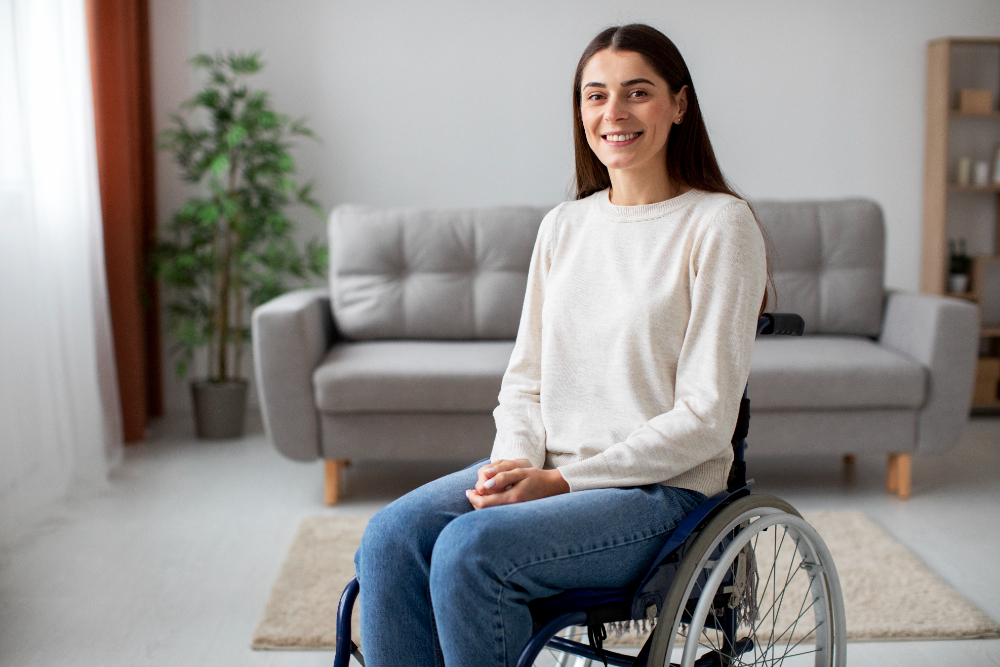

LOAS BPC: 5 condições que podem garantir o benefício
Data: 24/03/2025 Fonte: Patricia Macedo

Olá, pessoal! E hoje vou falar sobre um direito muito importante que muitas pessoas desconhecem: o Benefício de Prestação Continuada (BPC LOAS). Você sabia que algumas deficiências podem garantir um auxílio mensal de R$ 1.518,00? Isso mesmo! O BPC LOAS é um benefício destinado a pessoas com deficiência de qualquer idade e idosos com 65 anos ou mais que comprovem baixa renda.
E para te ajudar a entender melhor, preparei uma lista com 5 condições que podem dar direito ao benefício:
- Nanismo: A limitação na mobilidade e as dificuldades nas atividades diárias podem ser consideradas para a concessão do benefício.
- Braço amputado: A redução da capacidade de trabalho e as dificuldades em tarefas que exigem coordenação bilateral também podem garantir o BPC LOAS.
- HIV: As complicações de saúde frequentes que comprometem a autonomia e a inserção no mercado de trabalho podem ser levadas em conta.
- Ansiedade e Depressão: Crises intensas que impedem a rotina normal, afetando trabalho e estudo, também podem ser consideradas.
- TDAH e Autismo: A dificuldade de concentração e interação social, que impactam a vida profissional e acadêmica, pode garantir o benefício.
Lembre-se: é fundamental comprovar a deficiência e a vulnerabilidade social para ter direito ao BPC LOAS.